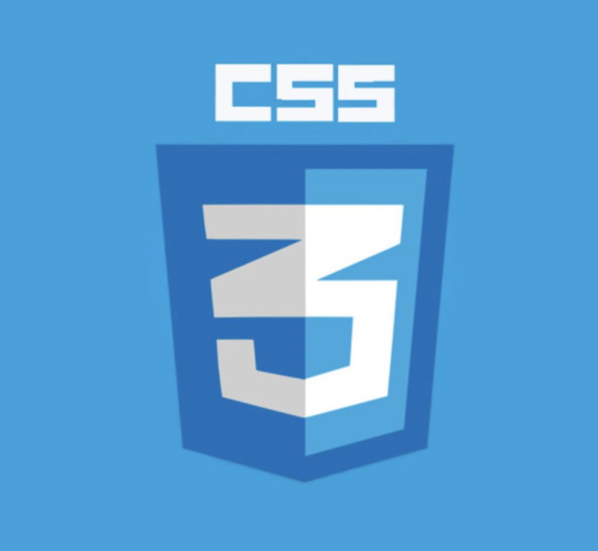

- html
- css
- java
Cascading Style Sheets(CSS)는 HTML이나 XML
(XML의 방언인 SVG, XHTML 포함)로 작성된 문서의 표시
방법을 기술하기 위한 스타일 시트 언어입니다. CSS는 요소가
화면, 종이, 음성이나 다른 매체 상에 어떻게 렌더링되어야 하는지 지정합니다.
CSS는 오픈 웹의 핵심 언어 중 하나이며, W3C 명세가 다양한 브라우저의
표준으로 작동하고 있습니다. 과거에는 CSS 명세의 다양한 부분을 순차적으로
개발했으므로 CSS1, CSS2.1, CSS3처럼 버전을 붙이는 것이 가능했습니다.
그러나 공식 버전이 CSS4로 올라가지는 않을 것입니다
HTML
markup language(apple)
only l can change my life.
no one can do it for me
